AI Academy · Level 2 · Grade 7 · Week 28 · Student lesson
Prompt Experiments
Learn to understand, design, build, test and explain AI systems responsibly.
Project: Transparent Book Recommender
Before you start
Week 12: use the same scoring rules for comparisons.
Plan time to read, investigate and explain. Keep predictions separate from observations.
Student lesson · 1 of 16
Your mission
Your learning target
I can explain the mechanism and terminology of controlled prompt experiments.
I can apply the stated procedure to a new case with a traceable result.
I can identify an assumption or limitation and design a revealing follow-up.
Remember before reading
Close your notes first. A rough first answer helps us choose the right starting point; it is not a score for your ability.
Without opening the old lesson, explain one key idea from Predictive vs Generative. Give an example and a mistake that the idea helps you avoid.
Without opening the old lesson, explain one key idea from Text as Pieces. Give an example and a mistake that the idea helps you avoid.
Without opening the old lesson, explain one key idea from Nearest Neighbor Reasoning. Give an example and a mistake that the idea helps you avoid.
After trying, check the relevant lesson or ask your teacher. Change the part of your explanation that the evidence shows was wrong.
Week 28: Prompt Experiments
Prompt quality is evaluated by controlled comparisons and success criteria.
THINKER MISSION
Change one prompt variable at a time and score results.
Thinker name and date:
Readiness for the connected explanation
Recall Structured outputs and validation. Explain why a recorded result needs its input conditions and evidence source before it can support a claim.
This week’s end goal
By the end, I can compare prompts on paired cases and inspect a subgroup before choosing.
Student lesson · 2 of 16
Notice the evidence
PICTURE STORY
Notice → Predict → Explain
Begin with visible evidence. Do not explain more than the picture and information support.
MYSTERY
The learners must use prompt experiments to solve a problem. What information do they have? What decision or calculation do they make? What would count as evidence that it worked?
Three observations (what you can point to):
My prediction and the clue supporting it:
A closer explanation
A prompt experiment compares complete specifications using the same task cases. Define success before inspecting outputs; change one intended instruction and preserve other settings.
Begin by writing the question the procedure is intended to answer. Identify the information already supplied, the information it will produce and the information still missing. These are constructed classroom examples; they do not require live accounts, private records or an external service. Do not treat a plausible explanation as a measured outcome.
Student lesson · 3 of 16
See how it works
VISUAL MECHANISM
Input → Process → Output
Trace the information. At each stage, ask what changed and how you could test it.
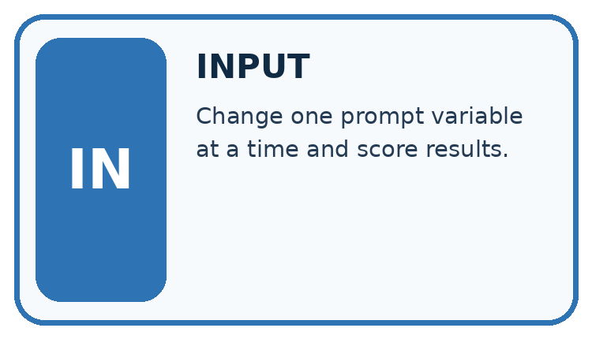
↓
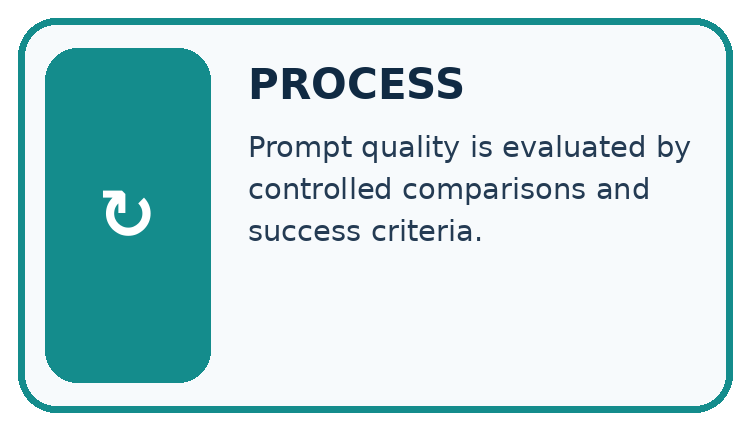
↓
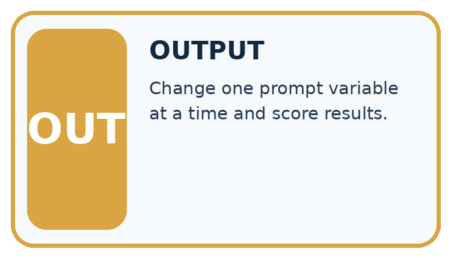
Which stage could fail even when the other two are correct? Explain:
A closer explanation
Evaluate both prompts on paired cases with fixed model/version, source records, output contract and scoring rubric. Use development results for selection, then reserve new final cases. Score each case rather than counting attractive sentences.
Controlled prompt experiments — evidence trace
Before applying the procedure, write its units, denominator or decision boundary where relevant. A partner should be able to repeat each step using the same inputs. If a required input is absent or violates the stated contract, record that condition explicitly instead of quietly replacing it with a convenient value.
Connect the picture and the explanation
Point to the input, the deciding step and the result in this week’s visual. Explain the same step in ordinary words. A picture helps when you can say what each part represents.
Student lesson · 4 of 16
Compare the cases
CASE GALLERY
Four Tests, Four Kinds of Evidence
A system is not understood until it survives more than one comfortable example.


NORMAL CASE: predict and name evidence. BOUNDARY CASE: predict and name evidence.


MISSING INFORMATION: predict and name evidence. TRANSFER CASE: predict and name evidence.
Which case is most likely to reveal a hidden assumption? Why?
Change one thing in the pictured case
Change: Make missing-source correctness a required selection gate.
Prediction: Neither prompt clears a 2/2 gate on these records.
Reason: P fails 7 and Q fails both 4 and 7; both need revision.
Student lesson · 5 of 16
Words that unlock the idea
VOCABULARY LAB
Words You Can Use to Reason
A definition matters when you can recognize the idea, use it, and contrast it with a near-miss.
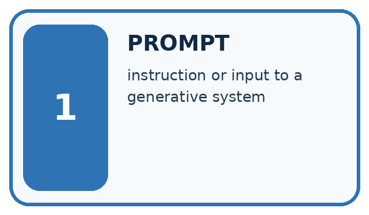
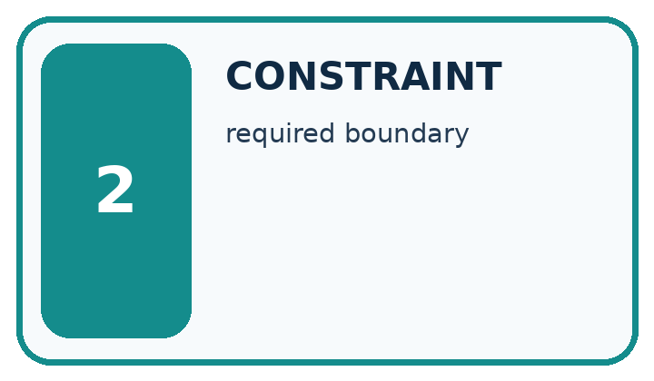
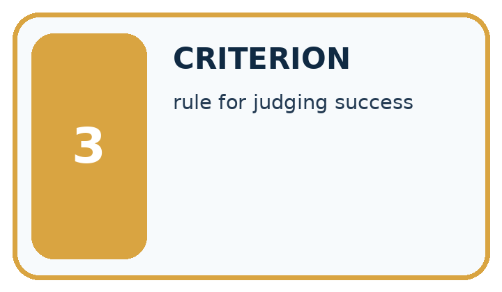
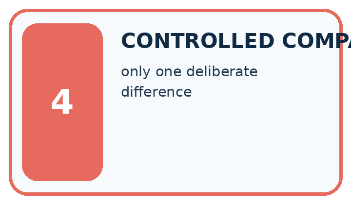
| Word | My own example | Not this / boundary |
|---|---|---|
| prompt | Input instructions and context supplied to a generative system. | |
| constraint | A condition that a valid solution must satisfy. | |
| criterion | One stated standard used to judge a result. | |
| controlled comparison | A comparison designed to keep relevant conditions alike except for the factor being studied. |
Words used in the closer explanation
| Word | Meaning |
|---|---|
| Paired case | The same case evaluated under each compared procedure |
| Rubric | Prespecified criteria for judging an output |
| Regression | A previously passing condition that fails after a change |
Student lesson · 6 of 16
Follow a worked example
WORKED EVIDENCE
Reason Step by Step
Predict first. Then check each step. A correct answer without visible reasoning is incomplete evidence.
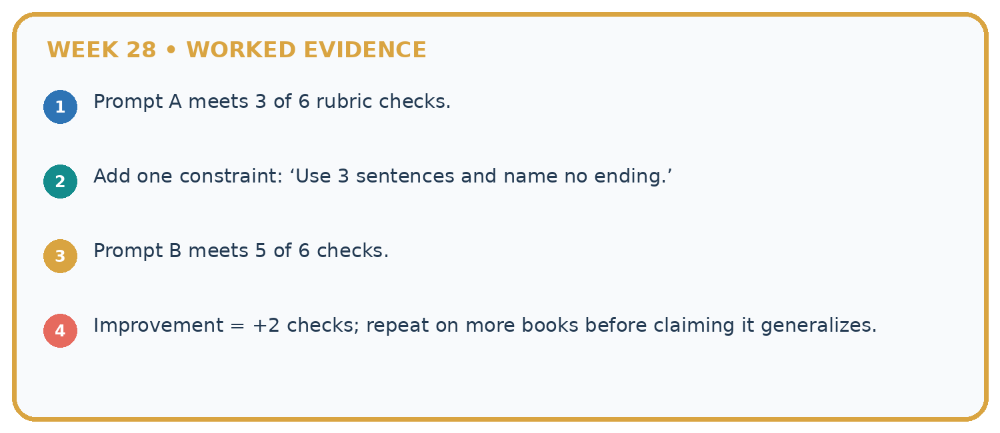
1. Prompt A meets 3 of 6 rubric checks.
2. Add one constraint: ‘Use 3 sentences and name no ending.’
3. Prompt B meets 5 of 6 checks.
4. Improvement = +2 checks; repeat on more books before claiming it generalizes.
Recalculate, retrace, or restate the reasoning in your own representation:
CHECK Did the evidence answer the exact question? Did the total, path, or source record stay consistent?
A closer explanation
On six development cases P passes cases 1, 2, 3, 4; Q passes 1, 2, 3, 5, 6. Missing-approval cases are 4 and 6. Compare totals and condition results.
P passes 4/6 and Q 5/6. P passes one of two missing-approval cases, Q also one of two. Q improves the aggregate while leaving this condition unchanged.
Compare the intermediate evidence with the final statement. Explain why each number or decision follows from the stated inputs. The conclusion belongs to this scenario and procedure; changing the inputs, evaluation population or authority can change what it establishes. Retain the raw record so a later revision can be compared honestly.
Learn from the worked case
Cover the result before checking it. Say what is given, choose the procedure, and follow one step at a time. Then uncover the result and explain your first mismatch. Ask why a step is allowed, not only what number it produces.
A pictorial worked case: Prompt Experiments
A fictional book-help project tests two prompt versions on seven shared development cases.
The facts we will use
P passes cases 1,2,3,4. Q passes 1,2,3,5,6. Cases 4 and 7 involve missing sources.
Same inputs, system configuration and rubric; only the prompt changes. These are invented records.
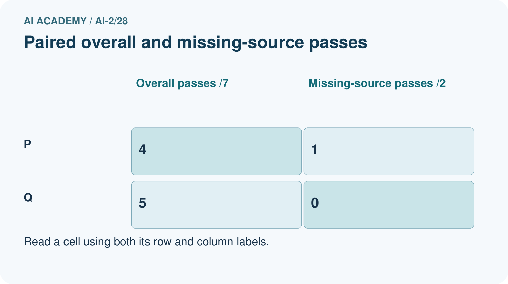
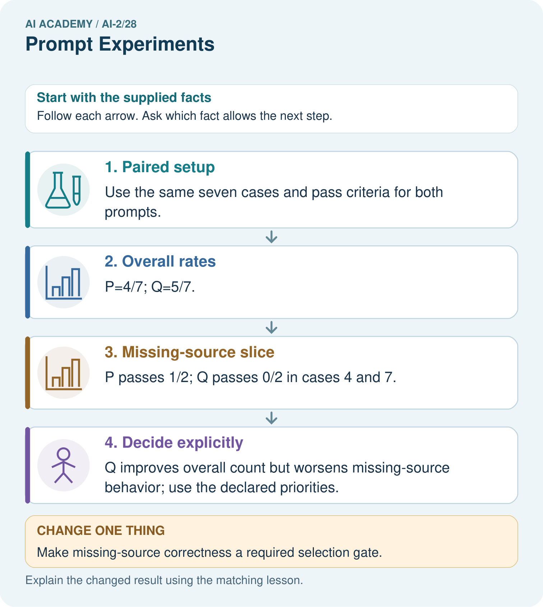
Read the picture one step at a time
Why this result follows
A larger total can conceal a more serious failure category. Paired records show which cases changed, not just how many passed. If refusing unsupported claims is mandatory, Q’s overall advantage may not justify selection. Keep the failing examples for development and obtain fresh cases after choosing a final version.
What this example does not establish
Seven development cases cannot establish causal learning benefits or untouched final performance; repeated generation may also vary.
Read the labelled picture: Name the case P passes and Q fails, and explain why it matters.
Change one thing: Make missing-source correctness a required selection gate. Predict the result before checking the explanation. What remains the same?
Student lesson · 7 of 16
Find and repair a mistake
ERROR DETECTIVE
Compare → Diagnose → Repair
Do not patch the answer. Find the earliest unsupported assumption, wrong step, or weak evidence.
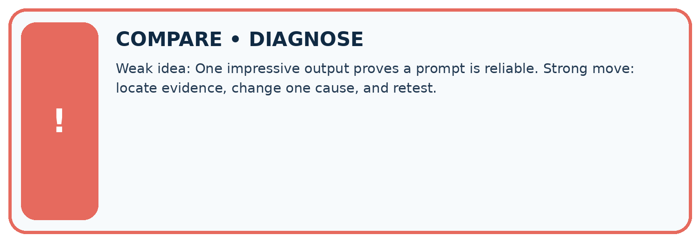
| Evidence record | Expected | Actual | Likely cause / next test |
|---|---|---|---|
| normal case | works | ||
| boundary case | stated rule | ||
| missing input | safe response | ||
| fresh transfer | generalizes |
Repair one cause. Why is this repair better than changing several things?
A closer explanation
Complete the supported workbook tasks before attempting W4 independently. Record any hints or help used. After feedback, use the teacher's fresh retry rather than copying the earlier answer. For a project, select a relevant new case, predict the outcome from the declared rule and preserve the result alongside any revision.
Student lesson · 8 of 16
Practise together
LOGIC STUDIO
Trace Before You Run
Block code, pseudocode, tables, and diagrams are different ways to expose the same reasoning.

SET evidence_record PREDICT expected_result RUN one normal case and one boundary case COMPARE actual_result with expected_result IF different: locate first cause; change one factor; RETEST EXPLAIN result, limitation, and next safe step
Trace one input. Which line changes the state or chooses a path?
A closer explanation
Prompt selection on development cases cannot be reported as independent final performance.
A useful check asks what would make the reasoning fail. Distinguish a failure to execute the declared procedure from a weakness in the procedure itself. The first may require a correction; the second requires an explicitly revised method and new evidence. Preserve unsuccessful cases so an improved result cannot hide the original problem.
Practise with less help: Trace the worked case
Use workbook W2 for the connected example “Controlled prompt experiments”. First fill the input and rule boxes. Try the middle steps before asking for a hint. After a hint, try the next step yourself.
| Plan | Do | Check |
|---|---|---|
| What is given? Which rule or procedure applies? | Record each intermediate step. | Does the result follow? What remains unknown? |
Explain your trace to a partner. Your partner points to one step to check. Swap roles on the next case. Each person writes their own explanation.
Check your reasoning
Use the worked case for Controlled prompt experiments. Proposed explanation: “The worked result establishes every future case”. Decide whether this explanation is supported. Point to the step or supplied fact that decides; explain your repair if needed.
Answer on your own before discussion. If you are unsure, say which step you need help with.
Explain the picture
Name the case P passes and Q fails, and explain why it matters.
This is supported practice. Keep the separately named independent case for an attempt before feedback.
Student lesson · 9 of 16
Run the investigation
EVIDENCE LAB
Predict → Test → Record → Explain
Keep expected and actual results separate. Surprises are useful data when recorded honestly.
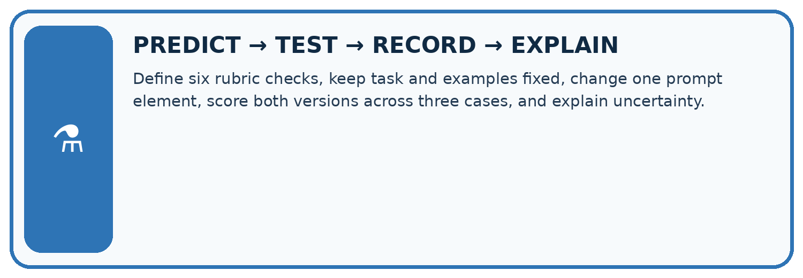
Define six rubric checks, keep task and examples fixed, change one prompt element, score both versions across three cases, and explain uncertainty.
| Test / input | Prediction | Actual | Evidence / calculation | Change or keep? |
|---|---|---|---|---|
| normal | ||||
| boundary | ||||
| missing | ||||
| fresh transfer |
What did the hardest test teach you that the normal test did not?
Plan → try → check
Before trying: what do I expect, and why? While trying: which step could first go wrong? Afterwards: what did I actually observe, and what should change? Keep “not run” if you only traced the procedure.
Student lesson · 10 of 16
Build your understanding
MASTERY
From Knowing the Word to Owning the Idea
Move upward only when you can produce evidence without copying the worked example.

1 • NAME: Define the concept without repeating the textbook.
2 • TRACE: Show the information, state, branch, calculation, or evidence path.
3 • APPLY: Solve a different example independently.
4 • CHALLENGE: Find a boundary case, counterexample, or unfair outcome.
5 • EXPLAIN LIMITS: Say when the result should not be trusted or used alone.
My strongest evidence of independent understanding:
Student lesson · 11 of 16
Connect your project
CUMULATIVE PROJECT
Transparent Book Recommender
Every week adds one inspectable piece. The system must show how it reached a result.
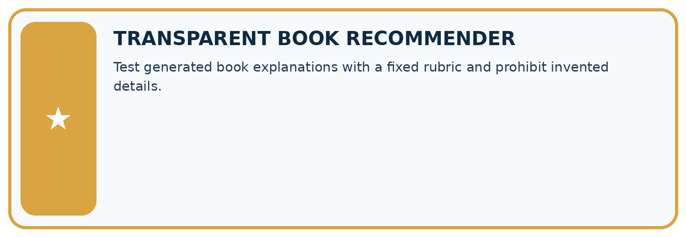
THIS WEEK’S CHECKPOINT Test generated book explanations with a fixed rubric and prohibit invented details.
SYSTEM MAP Reader need → allowed inputs → transparent rule or score → ranked candidates → explanation → test record → human decision
What will you add, change, or verify in the project this week?
What should remain under human control?
RESPONSIBLE DESIGN Collect only necessary information. Show uncertainty and limits. Never confuse a ranking with a fact about a person.
Evidence for your project
Run controlled recommender explanation experiments with paired cases and report important failure conditions separately.
Student lesson · 12 of 16
Show what you know
INDEPENDENT MASTERY PROOF
Explain • Transfer • Test • Defend
Complete this page without copying the worked example. Your reasoning matters more than decoration.
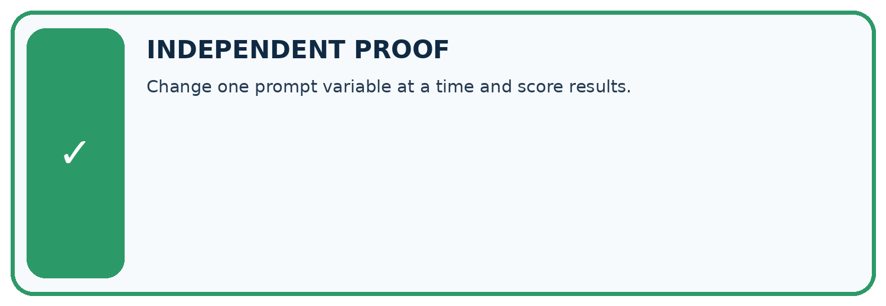
CHALLENGE Change one prompt variable at a time and score results.
1. My fresh example, trace, calculation, or design:
2. My evidence that it works (include a boundary or missing-data case):
3. One limitation, fairness concern, or situation needing human review:
SELF-CHECK □ I explained the mechanism □ I used evidence □ I tested a fresh case □ I named a limitation □ I can answer ‘why?’
Student lesson · 13 of 16
Study a complete case
Week 28 Worked case
Use the supplied details to practise the weekly concept before attempting the independent question. This case extends the illustrated lesson.
The situation
Prompt B adds under 100 pages and explain the match to Prompt A. Both use a catalogue.
The question
Design a fair comparison.
Worked explanation
Use identical requests, catalogue and scoring criteria. Check constraint compliance and supported explanation; repeat stochastic outputs when relevant.
Explain it in your own words
Which detail supports the answer, and why does it matter?
Trace the supplied case visually
Compare prompts under the same conditions
| Evidence or stage | Value or result |
|---|---|
| Prompt A | Original catalogue request |
| Prompt B | Add under 100 pages and explain the match |
| Hold fixed | Catalogue, requests and scoring |
| Check | Constraint compliance and supported explanation |
Prompt B adds under 100 pages and explain the match to Prompt A. Both use a catalogue.
Design a fair comparison.
Use identical requests, catalogue and scoring criteria. Check constraint compliance and supported explanation; repeat stochastic outputs when relevant.
Student lesson · 14 of 16
Try a new case independently
Independent case: Apply a new case independently
On eight paired cases A passes 1–5; B passes 1–4, 6, 7. Special cases are 5 and 8. Compare overall and special-case results; select by total passes.
Attempt this case before feedback. Record any help. Earlier examples below are further practice; a case already practised with feedback cannot establish fresh transfer.
Week 28 Independent application
Close the worked explanation. Apply the idea to this different question without copying.
Prompt A and B are tested on different questions. B scores higher. Can wording alone explain the difference? Design a controlled comparison.
My answer, with a trace, calculation or supporting evidence
Create and test
Change one relevant detail. Predict the result before testing. Include a boundary or missing-information case when it helps reveal a limit.
My changed input and expected result
Connect to your project
Test generated book explanations with a fixed rubric and prohibit invented details.
The evidence I will keep
Your teacher has the independent answer and scoring criteria. Complete the matching workbook week to keep your practice evidence together.
Transfer practice from the original programme
Prompt A is tested on easy requests and B on requests with missing data. B scores lower. Design a fair comparison and specify what to do when outputs vary across runs.
Use feedback to improve
Attempt the independent case before hints. Record whether you worked alone, used a hint or followed a model. After feedback, fix the first unsupported step and explain why it changed. A later check uses a changed case, not a copied answer.
Student lesson · 15 of 16
Your lesson route
Start with this question: A fictional book-help project tests two prompt versions on seven shared development cases.
| By the end, I can | How I will show it |
|---|---|
| Explain the mechanism and terminology of controlled prompt experiments | Explain the deciding step, show a trace or test, and state one limit. |
| Apply the stated procedure to a new case with a traceable result | Explain the deciding step, show a trace or test, and state one limit. |
| Identify an assumption or limitation and design a revealing follow-up | Explain the deciding step, show a trace or test, and state one limit. |
Remember → watch and explain → try with help → investigate → try independently → keep project evidence. Your teacher may spread this lesson across several classes.
Keep your first prediction. Compare it with what the evidence shows and explain any change.
Student lesson · 16 of 16
Finish and return
Close your notes. Explain this goal in your own words: Explain the mechanism and terminology of controlled prompt experiments
If you are unsure, return to the worked picture and explain one arrow. If you are ready, change an input or assumption and justify your prediction.
Save your workbook evidence. At the next review, try a different case before opening your old answer.